📌 Chapter snapshot
- Unit II, World of Living, carries 25 marks in the 80-mark theory paper (shared with Life Processes, Control and Coordination, and Heredity).
- This is Chapter 7 of the rationalised NCERT Class 10 Science textbook, which is unchanged for the 2026-27 session.
- CBSE syllabus points: asexual and sexual reproduction in plants and animals; reproductive health (need and methods of family planning); safe sex vs HIV/AIDS; child bearing and women’s health.
Why do organisms reproduce?
Reproduction is the process by which living organisms produce new individuals of their own kind.
- Life processes such as nutrition, respiration and excretion are needed to keep an individual alive. Reproduction is not: an organism can live its whole life without ever reproducing.
- However, reproduction is essential for the species. Every individual dies one day; only reproduction creates new members, so the species continues generation after generation (continuity or perpetuation of the species).
- We notice a kind of organism only because there are large numbers of it around us. A single, isolated individual would hardly be noticed. These large numbers are the result of reproduction.
- Offspring look like their parents because they inherit the same basic body design, whose instructions are carried in DNA.
⭐ Exam tip
A favourite 1-mark and Assertion–Reason idea: reproduction is not essential for the survival of an individual, but it is essential for the survival of a species.
Do organisms create exact copies of themselves?
2.1 DNA: the blueprint of the body
- The chromosomes in the nucleus of a cell carry the information for passing on features from parents to offspring. This information is stored in DNA (deoxyribonucleic acid).
- DNA is the information source for making proteins. If the information changes, different proteins are made, and the body design of the organism can change.
- Therefore, the basic event in reproduction is the creation of a DNA copy.
2.2 How does a cell make a copy of itself?
- The cell uses chemical reactions to build a copy of its DNA, so there are now two copies.
- Along with DNA copying, additional cellular apparatus (membranes, organelles, cytoplasm) is made, so that each DNA copy has the machinery it needs to work.
- The two DNA copies separate, each taking its own cellular apparatus.
- The cell divides into two. One cell has given rise to two cells.
- DNA is copied
- Extra cellular apparatus is made
- DNA copies separate
- Cell divides into two
2.3 Copies are similar, not identical: variation
- No chemical reaction is 100% reliable. So the DNA copies are similar to the original but not exactly identical.
- These small copying errors are the source of variation.
- Some changes are so drastic that the new DNA cannot work with the cellular apparatus it inherits; such a new cell simply dies.
- Other changes are minor. The cell survives, and the offspring show small variations.
- Consistent DNA copying is still important: it keeps the body design that allows an organism to use its particular niche (its place and role in the environment). This links reproduction to the stability of populations of a species.
🧠 Remember
DNA copying must be reliable (so offspring get the parents’ body design) but it is never perfect (so offspring show variation). Good answers mention both.
2.4 The importance of variation
- Every population lives in a well-defined niche and uses its body design to survive there.
- A niche can change drastically for reasons beyond the organisms’ control: a rise in temperature, a fall in water level, even a meteorite hit.
- If all members of a population were identical and perfectly suited to the old niche, a drastic change could wipe out the whole population.
- If some members carry variations, a few of them may survive the new conditions, reproduce and keep the species going.
- NCERT example: bacteria living in temperate water. If global warming raises the water temperature, most of them die, but the few heat-resistant variants survive and multiply.
- Variation is therefore useful for the survival of the species over time, and it is the basis of evolution.
- But variation is not necessarily useful to the individual that carries it; for that individual it may be useless or even harmful. Its benefit shows up at the population level, when the environment changes.
Modes of reproduction: an overview
- Asexual reproduction: a single parent produces new individuals without forming or fusing gametes. The offspring are almost exact copies of the parent and of one another (clones).
- Sexual reproduction: usually two parents (male and female) are involved. Special cells called gametes (germ cells) are formed and they fuse during fertilisation. The offspring show variation.
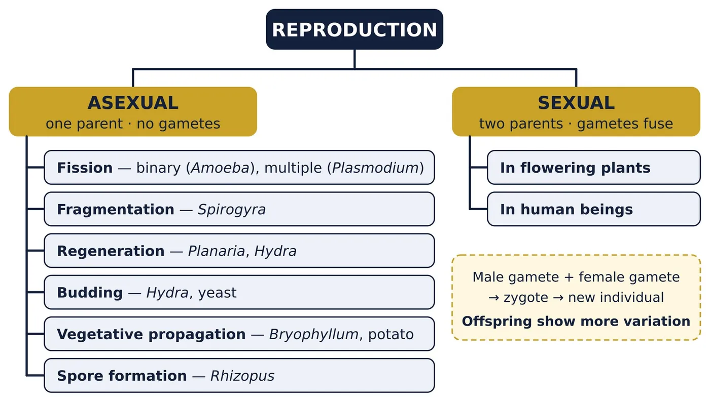
| Feature | Asexual reproduction | Sexual reproduction |
|---|---|---|
| Parents | One | Usually two |
| Gametes | Not formed | Male and female gametes formed |
| Fertilisation | Absent | Present: gametes fuse to form a zygote |
| Cell division | Only ordinary division of body cells (mitosis) | A special reduction division (meiosis) forms gametes; ordinary division for growth |
| Variation | Very little: only from DNA-copying errors | Much more: DNA of two parents combines |
| Speed | Fast; many offspring in a short time | Slower; needs more time and energy |
| Role in evolution | Small | Large: provides the raw material for evolution |
| Examples | Amoeba, Hydra, yeast, Rhizopus, Bryophyllum | Human beings, most animals, flowering plants |
Asexual reproduction: modes used by single organisms
4.1 Fission
In fission, a single-celled organism divides to form two or more new individuals. The parent disappears as it becomes the daughter cells. Fission is common in bacteria and protozoa.
(a) Binary fission
- The parent cell splits into two equal halves, and each half becomes a new individual.
- The nucleus divides first, and then the cytoplasm divides.
- Examples: Amoeba, Paramecium, Leishmania and many bacteria.
- Amoeba has no fixed shape, so it can split in any plane.
- Leishmania (the parasite that causes kala-azar) has a whip-like structure (flagellum) at one end. Its binary fission takes place in a definite orientation in relation to this structure.
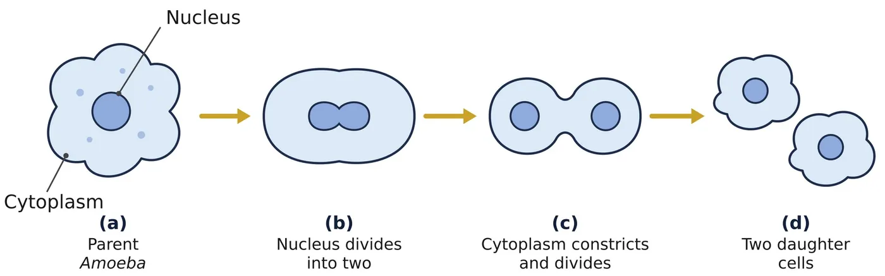
📍 Local connect
Kala-azar (black fever) is caused by Leishmania and spread by the bite of sandflies. Bihar has been one of the states most affected by it, so this textbook example is close to home.
(b) Multiple fission
- The parent cell divides into many daughter cells at the same time.
- The nucleus divides repeatedly to form many nuclei. Each nucleus gathers a little cytoplasm around itself, and the parent then breaks up to release many daughter cells.
- Example: Plasmodium, the malarial parasite (malaria spreads through the bite of the female Anopheles mosquito). Plasmodium multiplies this way inside human liver cells and red blood cells.
- Amoeba can also divide by multiple fission when conditions are unfavourable: it forms a protective wall called a cyst and divides into many daughter cells inside it.
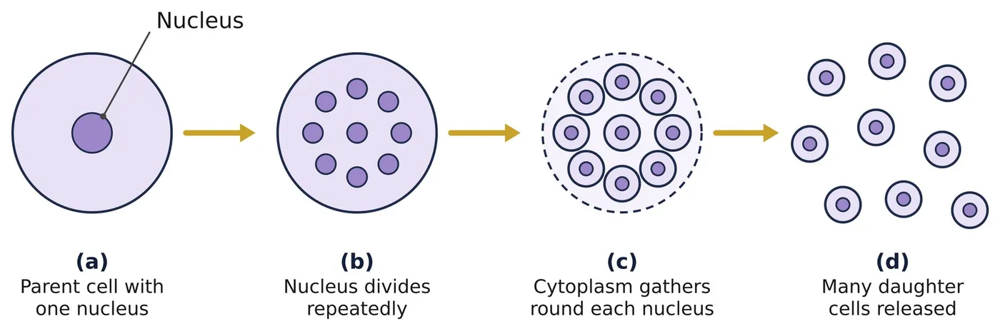
| Point | Binary fission | Multiple fission |
|---|---|---|
| Daughter cells | Two | Many, at the same time |
| Division of nucleus | Divides once | Divides repeatedly |
| Division of cytoplasm | Cytoplasm splits into two | Cytoplasm collects around each nucleus |
| Examples | Amoeba, Paramecium, Leishmania, bacteria | Plasmodium (and Amoeba inside a cyst) |
4.2 Fragmentation
- In multicellular organisms with a simple body organisation, the mature body simply breaks up into smaller pieces (fragments), and each fragment grows into a new individual.
- Example: Spirogyra, a green, thread-like (filamentous) alga found in ponds.
- This works for Spirogyra because its filament is made of similar cells: every fragment can carry out all the life processes.
- Most multicellular organisms cannot do this. They are not a random collection of cells: specialised cells form tissues and organs placed at definite positions. Simple cell-by-cell division cannot rebuild such a body, so these organisms need more complex ways of reproducing.
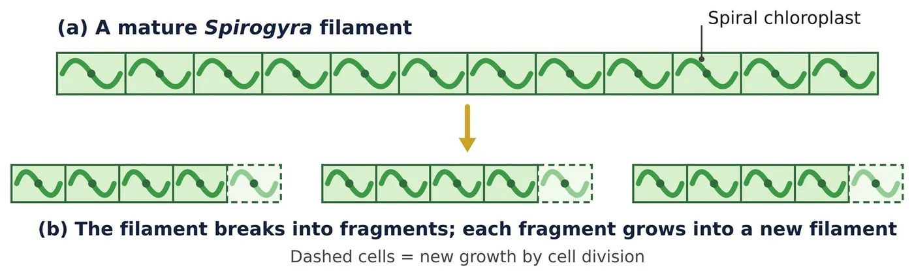
🔬 NCERT activity: Spirogyra
Collect dark green, thread-like filaments from a pond. Place one or two filaments on a slide with a drop of glycerine, cover with a coverslip and observe under a microscope. All the cells look alike: there are no different tissues.
4.3 Regeneration
- Many fully differentiated organisms can form complete new individuals from their body parts. If the body is cut into several pieces, many of the pieces grow into separate individuals.
- Examples: Planaria (a flatworm) and Hydra.
- Regeneration is carried out by specialised cells: they proliferate (divide again and again) to make a large mass of cells; cells in this mass then change into different cell types and tissues; these changes take place in an organised sequence called development.
- Regeneration is not the same as reproduction: most organisms do not normally depend on being cut into pieces in order to reproduce.
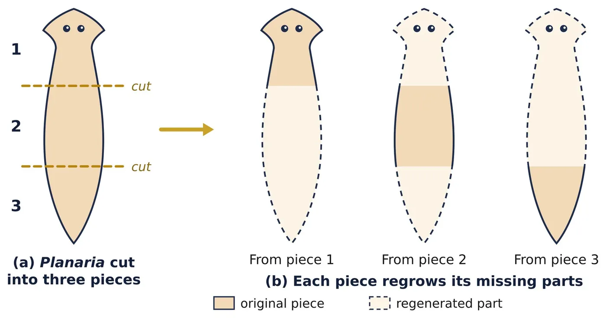
🤔 Why can’t complex organisms regenerate a whole body?
- Their bodies have highly specialised tissues, organs and organ systems that must work together.
- Most of their cells are specialised and have lost the ability to divide and form all the other kinds of cells.
- They do not have enough regenerative cells to rebuild a complete body from a small part.
Complex animals can only repair or regrow small parts: for example, healing of a wound, or a lizard regrowing its tail.
4.4 Budding
- A small outgrowth (bud) forms on the parent body at a specific site because of repeated cell division there.
- The bud grows into a tiny individual. When fully mature, it detaches from the parent and lives independently.
- Examples: Hydra (it uses its regenerative cells to form buds) and yeast, a single-celled fungus. In yeast, buds sometimes stay attached for a while and form a chain.
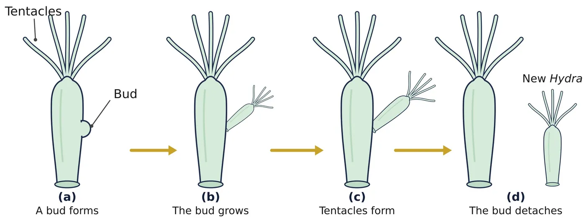
🔬 NCERT activity: budding in yeast
Dissolve about 10 g of sugar in 100 mL of water. Take 20 mL of this solution in a test tube, add a pinch of yeast granules, plug the tube with cotton and keep it in a warm place. After 1–2 hours, observe a drop under a microscope: yeast cells with small buds (sometimes chains of buds) can be seen.
| Point | Binary fission | Budding |
|---|---|---|
| Division | Parent splits into two equal halves | A small bud grows out; division is unequal |
| Parent | Loses its identity | Remains, and can form more buds |
| Examples | Amoeba, Leishmania | Hydra, yeast |
| Point | Fragmentation | Regeneration |
|---|---|---|
| How it starts | The mature body breaks up into pieces | The body is cut or broken, e.g., by injury |
| Organisms | Simple multicellular, e.g., Spirogyra | Fully differentiated, e.g., Planaria, Hydra |
| Nature | A normal mode of reproduction | Mainly repair; not a normal way to reproduce |
| Process | Fragments simply grow by cell division | Specialised cells proliferate and differentiate in an organised way |
4.5 Vegetative propagation
In many plants, new plants grow from vegetative parts (root, stem or leaf) under suitable conditions. No flowers, seeds or gametes are involved.
(a) Natural methods
- By leaves: in Bryophyllum, buds form in the notches along the leaf margin. When they fall on the soil, they grow into new plants.
- By stems: the potato tuber is a stem; its “eyes” are buds, and each can grow into a new plant. Ginger (rhizome) and onion (bulb) are other stem examples.
- By roots: sweet potato and dahlia: their roots can give rise to new plants.
(b) Artificial methods (used in agriculture and gardening)
- Cutting: a piece of stem with buds (nodes) is planted in moist soil; it grows roots and becomes a new plant, e.g., rose, sugarcane, money plant.
- Layering: a branch is bent down and covered with soil while still attached to the parent. Once it develops roots, it is cut off, e.g., jasmine, grapevine.
- Grafting: a shoot of a desired plant (the scion) is joined to a rooted plant (the stock) so that both grow as one plant, e.g., mango, rose, citrus.
✅ (c) Advantages
- Plants that have lost the capacity to produce seeds, such as banana, orange, rose and jasmine, can still be propagated.
- Such plants bear flowers and fruits earlier than plants raised from seeds.
- All the new plants are genetically similar to the parent, so desirable features (taste, yield, colour, disease resistance) are preserved.
- It is a quick, easy and cheap way to raise many plants.
⚠️ (d) Limitations
- No variation: all the plants are alike, so a single disease or change in climate can damage the whole crop.
- In nature, new plants grow close to the parent and compete with it for water, light and nutrients.
🔬 NCERT activities: potato and money plant
Potato: Cut a potato into small pieces, some with an “eye” (bud) and some without. Keep them on wet cotton. Only the pieces with a bud sprout: a bud is needed to form a new plant.
Money plant: Cut some pieces that carry at least one leaf, and other pieces from between two leaves. Keep one end of each in water. Pieces with a leaf (they have a node with a bud) grow roots and new leaves; pieces cut from between two leaves do not.
(e) Tissue culture (micropropagation)
- A small piece of tissue is taken from the growing tip of a plant.
- It is placed in an artificial nutrient medium under sterile conditions. The cells divide rapidly to form a mass of undifferentiated cells called callus.
- The callus is moved to another medium containing plant hormones for growth and differentiation; small plantlets form.
- The plantlets are planted in soil, where they grow into mature plants.
- Tissue from the growing tip
- Nutrient medium: cells divide → callus
- Hormone medium: callus → plantlets
- Planted in soil → mature plants
- Advantages: a large number of plants from a single parent; disease-free plants; can be done all year round; useful for plants that do not produce viable seeds.
- Uses: commonly used for ornamental plants such as orchids, carnation and chrysanthemum, and for crops like banana.
4.6 Spore formation
- Example: Rhizopus (bread mould), a fungus.
- Its body is made of thread-like structures called hyphae, which spread over the bread.
- Tiny “blob-on-a-stick” structures rise from the hyphae. Each blob is a sporangium (plural: sporangia), and it contains many cells called spores.
- Spores have thick walls that protect them until they come in contact with a moist surface. There they germinate and grow into new Rhizopus.
- Benefits of reproducing through spores: spores are produced in very large numbers; they are tiny and light, so air carries them far, and the organism spreads to new places; the thick wall lets them survive heat, dryness and other unfavourable conditions until conditions improve.
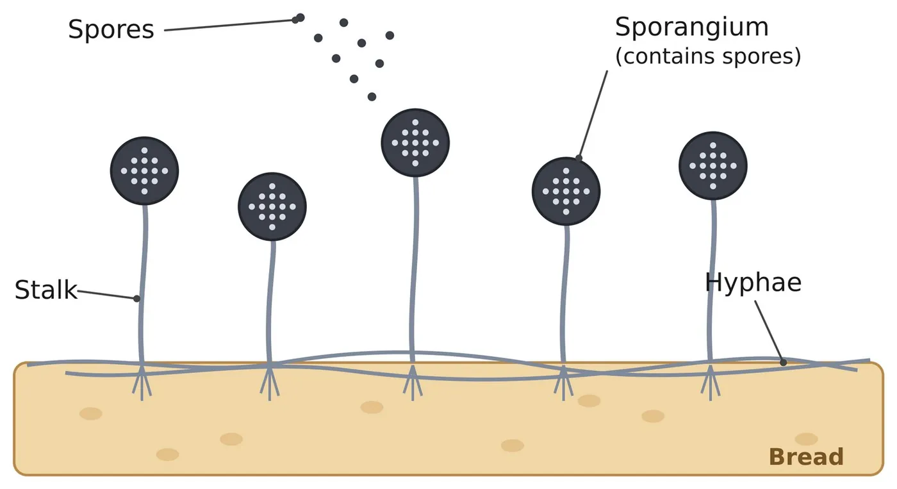
🔬 NCERT activity: bread mould
Keep a moist slice of bread in a cool, moist and dark place. Observe its surface with a magnifying glass for a week. First, white cottony threads (hyphae) appear; later, black dots (sporangia) are seen on them.
4.7 Summary of asexual modes
| Mode | What happens | Examples |
|---|---|---|
| Binary fission | One cell splits into two equal daughter cells | Amoeba, Leishmania, Paramecium, bacteria |
| Multiple fission | One cell splits into many daughter cells at once | Plasmodium |
| Fragmentation | The mature body breaks into pieces; each piece grows | Spirogyra |
| Regeneration | Cut pieces of the body grow into whole organisms | Planaria, Hydra |
| Budding | An outgrowth (bud) grows and separates | Hydra, yeast |
| Vegetative propagation | New plants from root, stem or leaf | Bryophyllum, potato, sugarcane, rose |
| Spore formation | Sporangia release spores that grow into new individuals | Rhizopus |
Sexual reproduction
5.1 Why the sexual mode of reproduction?
- In asexual reproduction, new variations come only from small errors in DNA copying, so they build up slowly.
- In sexual reproduction, the DNA of two individuals is combined in the offspring. New combinations appear much faster, so the offspring show much more variation.
- More variation means a greater chance that some individuals will survive when the environment changes. This helps the survival of the species and provides the raw material for evolution.
5.2 The problem of doubling, and its solution
- If two ordinary body cells, each with a full set of DNA, were to fuse, the new cell would have double the DNA. The amount would keep doubling every generation, and the cell’s DNA-controlled machinery would break down.
- The solution: germ cells (gametes) are made in specialised reproductive organs by a special kind of cell division (meiosis). Each gamete has only one set of chromosomes: half the DNA of a body cell.
- When a male gamete and a female gamete fuse during fertilisation, the zygote gets the normal number of chromosomes back.
- In this way, the chromosome number and the amount of DNA stay constant from one generation to the next.
5.3 The two kinds of gametes
- In simple organisms, the two gametes may look alike.
- In complex organisms they are specialised: the male gamete is small and motile (it can move); the female gamete is larger, non-motile and contains stored food.
- Because different organs produce these gametes, the bodies of males and females in many animals are also different.
5.4 Advantages of sexual reproduction
- Combining the DNA of two parents produces more variation.
- Variation helps the species adapt to changing surroundings, so it is more likely to survive.
- Variation is the raw material for evolution; over long periods it can lead to new species.
- Useful features of two different parents can come together in the offspring.
Sexual reproduction in flowering plants
6.1 The flower: the reproductive part of the plant
In flowering plants (angiosperms), the reproductive parts are located in the flower. From outside to inside, a typical flower has:
- Sepals: green and leaf-like; they protect the flower in the bud stage.
- Petals: often brightly coloured; they attract insects for pollination.
- Stamens: the male reproductive part.
- Pistil (carpel): the female reproductive part, found in the centre of the flower.
- The flower stalk is the pedicel; its swollen tip, on which all the parts are attached, is the thalamus (receptacle).
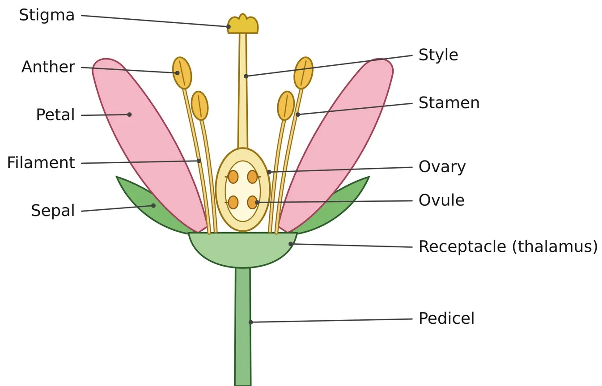
Stamen = Anther + Filament
- The anther produces pollen grains, which are usually yellowish. Pollen grains contain the male germ cells.
- The filament is the stalk that holds the anther up.
Pistil = Stigma + Style + Ovary
- Stigma: the terminal part, often sticky, which receives pollen.
- Style: the elongated middle part; the pollen tube grows through it.
- Ovary: the swollen bottom part; it contains ovules, and each ovule has an egg cell (female germ cell).
⭐ Exam tip
“Draw a labelled diagram of the longitudinal section of a flower” is an NCERT exercise question and appears often in board papers. Label at least: sepal, petal, anther, filament, stigma, style, ovary, ovule and receptacle.
6.2 Unisexual and bisexual flowers
| Point | Unisexual flowers | Bisexual flowers |
|---|---|---|
| Reproductive parts | Either stamens or pistil | Both stamens and pistil |
| Flowers | Separate male and female flowers | Male and female parts in the same flower |
| Examples | Papaya, watermelon | Hibiscus, mustard |
6.3 Pollination
Pollination is the transfer of pollen grains from the anther to the stigma. Agents of pollination include wind, water, insects, birds and other animals.
- Self-pollination: pollen reaches the stigma of the same flower (or of another flower on the same plant).
- Cross-pollination: pollen reaches the stigma of a flower on another plant of the same species.
📝 Note for NCERT answers
NCERT puts it simply: transfer of pollen within the same flower is self-pollination, and transfer from one flower to another is cross-pollination. Strictly speaking, cross-pollination means transfer to a flower on a different plant of the same species.
| Point | Self-pollination | Cross-pollination |
|---|---|---|
| Pollen goes to | Stigma of the same flower (or the same plant) | Stigma of a flower on another plant of the same species |
| Agent needed | Usually not | Yes: wind, water, insects, birds |
| Variation in offspring | Little | More |
| Examples | Pea, wheat | Papaya, maize |
6.4 Fertilisation in plants
- After a pollen grain lands on a suitable stigma, its male germ cell has to reach the female germ cell in the ovule.
- A pollen tube grows out of the pollen grain, travels through the style and reaches the ovule in the ovary.
- The male germ cell moves down the tube and fuses with the egg in the ovule. This fusion is fertilisation, and the fertilised egg is called the zygote.
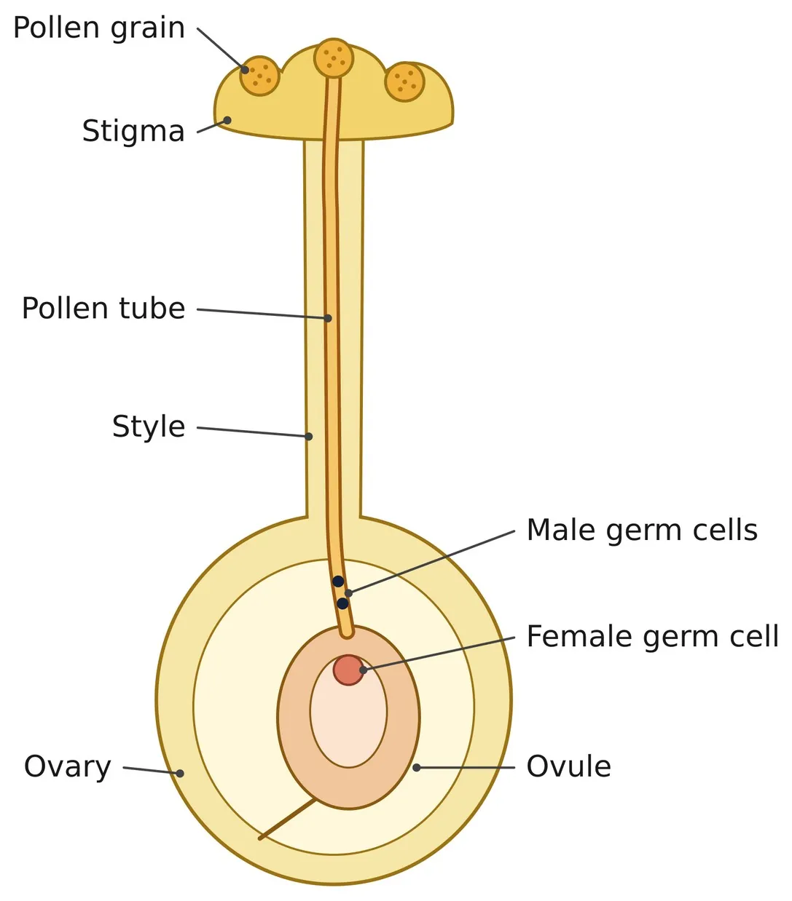
| Point | Pollination | Fertilisation |
|---|---|---|
| What happens | Pollen is transferred from anther to stigma | Male and female germ cells fuse |
| Where | On the stigma (outside the ovary) | Inside the ovule (in the ovary) |
| How | By agents such as wind, water and insects | A pollen tube carries the male germ cell to the ovule |
| Order | Comes first | Follows pollination |
| Result | Pollen lands on the stigma and germinates | A zygote is formed |
6.5 Changes after fertilisation
| Part | What it becomes |
|---|---|
| Zygote | Divides many times to form the embryo inside the ovule |
| Ovule | Develops a tough coat and becomes the seed |
| Ovary | Grows rapidly and ripens to become the fruit |
| Petals, sepals, stamens, style, stigma | Usually shrivel and fall off (in some fruits, such as brinjal and tomato, the sepals remain) |
🧠 Remember
Ovule → Seed and Ovary → Fruit. Trick: the smaller part (ovule) becomes the smaller structure (seed); the bigger part (ovary) becomes the bigger structure (fruit) that holds the seeds.
6.6 Seed and germination
- The seed contains the future plant: the embryo. Under suitable conditions, the embryo grows into a seedling; this process is germination.
- Parts of a dicot seed such as Bengal gram (chana): seed coat (the protective outer covering); cotyledons (two seed leaves that store food for the embryo); plumule (grows into the shoot); radicle (grows into the root).
- Germination needs water, air (oxygen) and a suitable temperature.
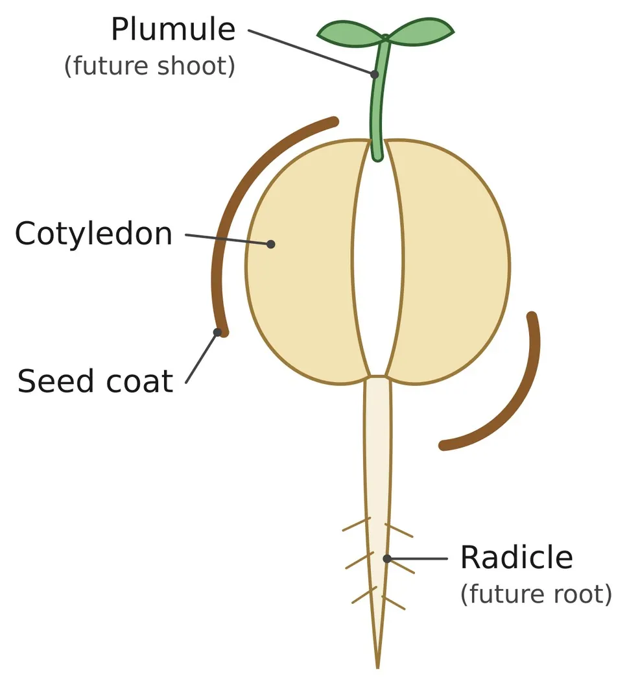
🔬 NCERT activity: parts of a seed
Soak a few Bengal gram seeds overnight. Drain the water, cover the seeds with a wet cloth and leave them for a day (do not let them dry). Carefully cut open the seeds and identify the seed coat, cotyledons, plumule and radicle.
6.7 The whole sequence at a glance
- The anther produces pollen grains
- Pollination: pollen reaches the stigma
- A pollen tube grows through the style to the ovule
- Fertilisation: male germ cell + egg → zygote
- Zygote → embryo; ovule → seed; ovary → fruit
- The seed germinates → a new plant
Reproduction in human beings
7.1 Puberty: sexual maturation
From birth, the body keeps growing in size. During adolescence, general body growth slows down and the reproductive tissues begin to mature. This period of adolescence is called puberty.
| Changes in both boys and girls | Changes in girls | Changes in boys |
|---|---|---|
| Thick hair grows in the armpits and in the genital area between the thighs | Breast size begins to increase; the skin of the nipples darkens | Thick hair begins to grow on the face (moustache, beard) |
| Thinner hair appears on the legs, arms and face | Menstruation begins | The voice begins to crack and becomes deeper |
| The skin becomes oily; pimples may appear | The penis occasionally becomes enlarged and erect, in daydreams or at night | |
| Greater awareness of one’s own body and of others’ bodies |
- These changes happen slowly, over months and years. They do not all happen at once, and they do not happen at the same age in everyone.
- Why do these changes happen? They signal sexual maturation: the body is being prepared for reproduction. In sexual reproduction, the germ cells of two individuals must meet, so male germ cells have to be transferred into the female body; the woman’s body must be able to carry the baby in the uterus for about nine months and feed it (breastfeeding) after birth.
- The changes are brought about by hormones: testosterone in boys and oestrogen in girls (link: Chapter 6, Control and Coordination).
7.2 Male reproductive system
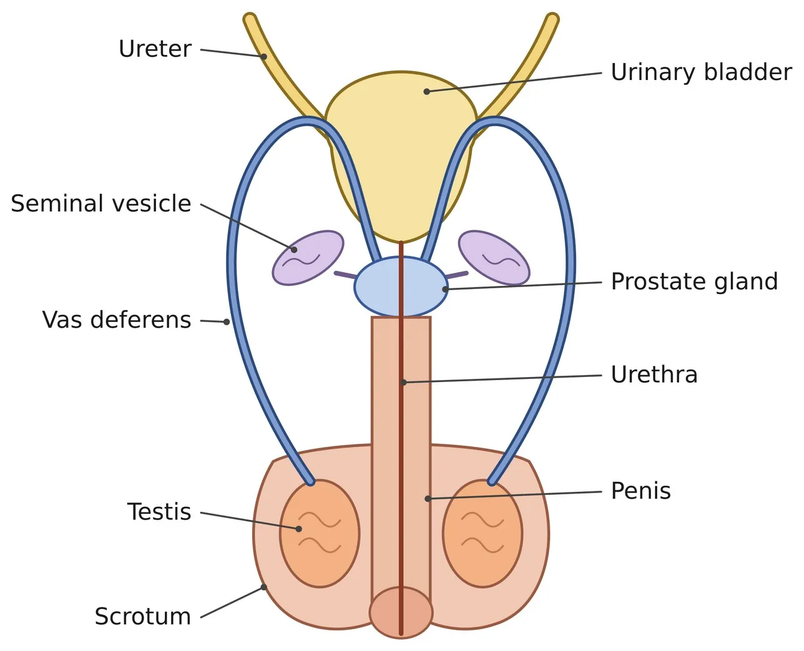
| Organ | Structure and function |
|---|---|
| Testes (pair) | The primary male reproductive organs. They lie outside the abdominal cavity, in the scrotum, because sperm formation needs a temperature lower than normal body temperature (about 2–3 °C lower). They (i) produce sperms and (ii) secrete the hormone testosterone, which regulates sperm formation and brings about the changes seen in boys at puberty. |
| Scrotum | A pouch of skin that holds the testes outside the body cavity, keeping them cooler. |
| Vas deferens | The tube that carries sperms from the testis. It joins with a tube coming from the urinary bladder. |
| Urethra | The common passage for both sperms and urine; it runs through the penis. |
| Seminal vesicles and prostate gland | Add their secretions to the sperms, so that the sperms are in a fluid. This makes their transport easier and also provides nutrition. Sperms + these secretions = semen. |
| Penis | Transfers the sperms into the female reproductive tract (vagina) during sexual intercourse. |
Sperms are tiny bodies made mostly of genetic material, with a long tail that helps them swim towards the female germ cell.
7.3 Female reproductive system
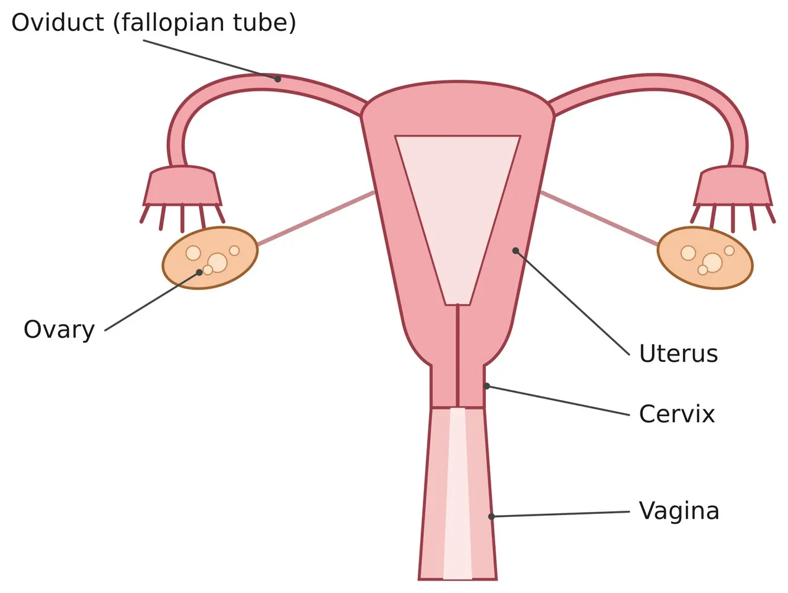
| Organ | Structure and function |
|---|---|
| Ovaries (pair) | The primary female reproductive organs. They produce eggs (ova) and secrete the hormones oestrogen and progesterone. A girl is born with thousands of immature eggs; from puberty some begin to mature, and one egg is released every month by one of the ovaries. |
| Oviducts (fallopian tubes) | Thin tubes that carry the egg from the ovary to the uterus. Fertilisation takes place here. |
| Uterus (womb) | The two oviducts unite into an elastic, bag-like, muscular organ. The embryo is implanted and develops here. |
| Cervix | The narrow lower end of the uterus, which opens into the vagina. |
| Vagina | Receives the sperms during sexual intercourse; also serves as the birth canal. |
7.4 Fertilisation, implantation and development
- During sexual intercourse, sperms enter through the vaginal passage.
- They travel upwards through the cervix and uterus and reach the oviduct.
- If they meet an egg there, fertilisation takes place and a zygote (fertilised egg) is formed.
- The zygote starts dividing and becomes a ball of cells, the embryo, while it moves down to the uterus.
- The embryo is implanted in the thick, soft lining of the uterus. (Every month the uterus prepares for this: its lining becomes thick and well supplied with blood.)
- The embryo develops further, forming tissues and organs, and is nourished through the placenta.
- Development inside the mother’s body takes about nine months (the gestation period).
- The baby is born as a result of rhythmic contractions of the muscles of the uterus.
- Sperms enter through the vagina
- Sperms reach the oviduct
- Fertilisation → zygote
- Zygote divides → embryo
- Implantation in the uterine wall
- Placenta forms; embryo grows for about nine months
- Birth by rhythmic contractions of the uterus
The placenta: how the embryo is nourished
- The embryo gets its nutrition from the mother’s blood through a special tissue called the placenta.
- The placenta is a disc embedded in the uterine wall.
- On the embryo’s side it has finger-like projections called villi; on the mother’s side there are blood spaces that surround the villi.
- The villi give a large surface area for glucose and oxygen to pass from the mother’s blood to the embryo.
- Wastes produced by the embryo pass into the mother’s blood through the placenta and are removed.
7.5 What happens when the egg is not fertilised? Menstruation
- Every month the ovary releases one egg, and the uterus prepares for a possible pregnancy: its lining becomes thick and spongy, with a rich blood supply, ready to nourish an embryo.
- If the egg is not fertilised, it lives for about one day.
- The thick lining is then not needed. It breaks down slowly and comes out through the vagina as blood and mucus. This is menstruation.
- The cycle repeats roughly every month (about 28 days), and the bleeding usually lasts about 2 to 8 days.
- The first menstruation at puberty is called menarche; the natural stopping of menstrual cycles later in life (around 45–50 years) is called menopause.
- An egg is released by the ovary
- The uterine lining thickens
- The egg is not fertilised (lives about a day)
- The lining breaks down
- Blood and mucus flow out: menstruation
- The cycle repeats roughly every month
Reproductive health
8.1 Making responsible choices
- Sexual maturation is gradual, and it happens while general body growth is still going on. Some degree of sexual maturity does not mean that the body or the mind is ready for sexual activity, or for having and bringing up children.
- Young people may feel pressure about such matters, from friends and sometimes from family or society. Correct information helps them make responsible decisions.
- Reproductive health means well-being in all aspects of reproduction: physical, emotional, behavioural and social.
8.2 Sexually transmitted diseases (STDs)
Because the sexual act is a very close contact between two bodies, many infections can pass from one person to another this way.
| Type | Examples |
|---|---|
| Bacterial | Gonorrhoea, syphilis |
| Viral | Warts, HIV-AIDS |
Using a condom (a covering for the penis) during sex helps to prevent the spread of many of these infections to some extent.
8.3 Safe sex vs HIV/AIDS
- AIDS (Acquired Immuno Deficiency Syndrome) is caused by HIV (Human Immunodeficiency Virus). HIV damages the body’s immune system, so the person easily catches other infections.
- HIV spreads through: unprotected sexual contact with an infected person; transfusion of infected blood; sharing of infected needles and syringes; an infected mother to her baby (during pregnancy, birth or breastfeeding).
- HIV does not spread by touching, hugging, shaking hands, sharing food or utensils, or mosquito bites.
- Safe practices: use of condoms, and a mutually faithful relationship with an uninfected partner; only screened (tested) blood for transfusions; disposable or properly sterilised needles and syringes; testing and treatment during pregnancy to protect the baby.
- There is no vaccine and no complete cure for AIDS yet; medicines (antiretroviral therapy) can only keep the virus under control. So prevention is the best protection.
8.4 Contraception: preventing pregnancy
Why contraception?
- The sexual act always has the potential to lead to pregnancy.
- Pregnancy makes major demands on a woman’s body and mind. If she is not ready for it, her health is adversely affected.
- Reasons for adopting contraceptive methods: to avoid unwanted pregnancies; to keep a proper gap (spacing) between children, so that the mother recovers and each child gets proper care; to protect the health of the woman (frequent pregnancies weaken her body); to keep the family size in line with its resources and to check population growth; some methods (condoms) also help prevent STDs, including HIV-AIDS.
Methods of contraception
| Method | How it works | Examples | Points to note |
|---|---|---|---|
| Barrier (mechanical) | A physical barrier stops sperms from reaching the egg | Condom for the penis; similar coverings worn in the vagina (diaphragm, cervical cap) | Condoms also give some protection against STDs |
| Hormonal (oral pills) | Changes the hormonal balance so that eggs are not released; fertilisation cannot occur | Oral contraceptive pills | Can cause side-effects, because they alter the hormonal balance |
| Intrauterine devices | A device placed in the uterus prevents pregnancy | Loop, copper-T | May cause side-effects due to irritation of the uterus; no protection against STDs |
| Surgical (sterilisation) | The path of the gametes is blocked | Vasectomy: vas deferens blocked in males, so sperms cannot be transferred; tubectomy: fallopian tube blocked in females, so the egg cannot reach the uterus | A permanent method; surgery can cause infection and other problems if not done properly |
⚠️ Copper-T and STDs (NCERT in-text question)
A woman using a copper-T is not protected from sexually transmitted diseases. The copper-T only helps prevent pregnancy; it does not stop the exchange of body fluids during sex. Protection against STDs needs a barrier method such as a condom.
8.5 Termination of pregnancy and female foeticide
- Surgical methods can also be used to remove unwanted pregnancies. These can be misused by people who do not want a particular child, as in the illegal sex-selective abortion of female foetuses (female foeticide).
- For a healthy society, the female–male sex ratio must be maintained. Because of reckless female foeticide, the child sex ratio has been falling at an alarming rate in some sections of society.
- Prenatal sex determination is prohibited by law in India (the PC-PNDT Act).
8.6 Reproduction and population
- The size of a population depends on its birth rate and death rate.
- A very large population makes it harder to improve everyone’s standard of living.
- However, if inequality in society is the main reason for a poor standard of living for many people, population size is relatively less important.
8.7 Child bearing and women’s health
- The legal minimum age of marriage in India is 18 years for women and 21 years for men (Prohibition of Child Marriage Act, 2006).
- Pregnancy before the body is fully mature is risky for both mother and baby (for example, anaemia, a difficult delivery, low birth weight).
- A woman’s health is protected by: having children only when her body and mind are ready; a gap of at least two years between children; a nutritious diet (rich in iron, calcium and folic acid) during pregnancy; regular antenatal check-ups, the recommended vaccinations, and delivery by trained health workers; an equal say in decisions about the size of the family.
- A healthy mother means a healthy child, and a healthier society.
Quick revision
9.1 Key terms
| Term | Meaning |
|---|---|
| Reproduction | Production of new individuals of the same kind; ensures continuity of the species |
| DNA | Molecule in the chromosomes that carries the information for making proteins and decides body design |
| Variation | Differences among individuals of a species, from imperfect DNA copying and (in sexual reproduction) from combining the DNA of two parents |
| Clone | An offspring that is genetically identical to its parent (asexual reproduction) |
| Binary fission | Division of a parent cell into two equal daughter cells |
| Multiple fission | Division of a parent cell into many daughter cells at the same time |
| Fragmentation | Breaking of a mature body into pieces, each growing into a new organism |
| Regeneration | Formation of a whole organism from a body part, by proliferation and differentiation of specialised cells |
| Budding | Formation of a new individual from an outgrowth (bud) of the parent |
| Vegetative propagation | Growing new plants from a root, stem or leaf |
| Tissue culture | Growing new plants from cells or tissue placed in an artificial medium |
| Callus | Mass of undifferentiated cells formed in tissue culture |
| Hyphae | Thread-like structures that make up the body of Rhizopus |
| Sporangium | Blob-like structure that produces and holds spores |
| Spore | Small reproductive cell with a thick protective wall |
| Gamete (germ cell) | Reproductive cell with half the number of chromosomes: the sperm or the egg |
| Fertilisation | Fusion of a male gamete with a female gamete |
| Zygote | The cell formed by fertilisation |
| Pollination | Transfer of pollen grains from the anther to the stigma |
| Pollen tube | Tube that grows from a pollen grain through the style to the ovule |
| Ovule | Structure in the ovary that contains the egg; it becomes the seed |
| Embryo | Early stage of development formed from the zygote |
| Plumule / Radicle | Parts of the embryo that grow into the shoot / the root |
| Cotyledon | Seed leaf that stores food |
| Germination | Growth of the embryo in a seed into a seedling |
| Puberty | Period of adolescence when the reproductive tissues mature |
| Scrotum | Pouch that holds the testes outside the abdominal cavity |
| Vas deferens | Tube that carries sperms from the testis |
| Semen | Sperms together with the secretions of the seminal vesicles and prostate gland |
| Oviduct (fallopian tube) | Tube that carries the egg from the ovary to the uterus; the site of fertilisation |
| Implantation | Embedding of the embryo in the lining of the uterus |
| Placenta | Disc-shaped tissue that links the embryo to the uterine wall for exchange of food, oxygen and wastes |
| Gestation | Development of the baby inside the mother’s body (about nine months) |
| Menstruation | Monthly breakdown and discharge of the uterine lining when the egg is not fertilised |
| Contraception | Methods used to prevent pregnancy |
| Vasectomy / Tubectomy | Surgical blocking of the vas deferens / the fallopian tube |
| STD | Sexually transmitted disease, e.g., gonorrhoea, syphilis, warts, HIV-AIDS |
9.2 Organism and its mode of reproduction
| Organism | Mode of reproduction |
|---|---|
| Amoeba | Binary fission (in any plane); multiple fission inside a cyst |
| Leishmania | Binary fission in a definite plane |
| Paramecium, bacteria | Binary fission |
| Plasmodium | Multiple fission |
| Spirogyra | Fragmentation |
| Planaria | Regeneration |
| Hydra | Budding (also regeneration) |
| Yeast | Budding |
| Rhizopus | Spore formation |
| Bryophyllum | Vegetative propagation by buds on the leaf margin |
| Potato | Vegetative propagation by the stem tuber (“eyes”) |
| Banana, rose, jasmine | Vegetative propagation |
| Flowering plants, human beings | Sexual reproduction |
9.3 Diagrams to practise
| Diagram | Labels to show |
|---|---|
| Binary fission in Amoeba | Nucleus, cytoplasm, dividing nucleus, daughter cells |
| Multiple fission in Plasmodium | Parent cell, many nuclei, daughter cells |
| Budding in Hydra | Parent Hydra, bud, tentacles, new Hydra |
| Regeneration in Planaria | Cut pieces, each regenerating a whole body |
| Spore formation in Rhizopus | Hyphae, sporangium, spores |
| LS of a flower (very important) | Sepal, petal, anther, filament, stigma, style, ovary, ovule, receptacle |
| Germination of pollen on stigma (very important) | Pollen grain, stigma, pollen tube, style, ovary, ovule, female germ cell, male germ cell |
| Germination of a seed | Seed coat, cotyledon, plumule, radicle |
| Male reproductive system (very important) | Urinary bladder, ureter, seminal vesicle, prostate gland, vas deferens, urethra, penis, testis, scrotum |
| Female reproductive system (very important) | Ovary, oviduct (fallopian tube), uterus, cervix, vagina |
9.4 Memory tricks
🧠 Mnemonics
- Asexual modes: “Funny Frogs Rarely Buy Vegetable Soup”: Fission, Fragmentation, Regeneration, Budding, Vegetative propagation, Spore formation.
- Flower parts, outside to inside: “Some People Sing Proudly”: Sepal, Petal, Stamen, Pistil.
- Pistil, top to bottom: “Students Study Often”: Stigma, Style, Ovary.
- Path of sperms: “Tired Vans Use Petrol”: Testis → Vas deferens → Urethra → Penis.
- Female tract, ovary downwards: “Our Old Uncle Can’t Vanish”: Ovary → Oviduct → Uterus → Cervix → Vagina.
9.5 Common mistakes to avoid
⚠️ Don’t lose marks
- Fertilisation in humans takes place in the oviduct, not in the uterus or the ovary.
- Pollination (transfer of pollen) is not the same as fertilisation (fusion of gametes).
- Ovule → seed and ovary → fruit, not the other way round.
- The testes lie in the scrotum because sperm formation needs a lower temperature, not “for protection”.
- A copper-T does not protect against STDs.
- Amoeba divides in any plane; Leishmania divides in a definite plane.
- Regeneration is not a normal method of reproduction for most organisms.
- Spell the names correctly: Amoeba, Leishmania, Plasmodium, Spirogyra, Planaria, Hydra, Rhizopus, Bryophyllum.
NCERT questions answered
Tap a question to see its answer.
10.1 In-text questions
1What is the importance of DNA copying in reproduction?
2Why is variation beneficial to the species but not necessarily to the individual?
3How does binary fission differ from multiple fission?
4How will an organism benefit if it reproduces through spores?
- Spores are produced in very large numbers.
- They are tiny and light, so air carries them far, and the organism spreads to new places.
- Their thick walls protect them in unfavourable conditions; they germinate when they reach a moist surface.
5Why can’t more complex organisms give rise to new individuals through regeneration?
6Why is vegetative propagation practised for growing some types of plants?
- Plants such as banana, orange, rose and jasmine have lost the capacity to produce seeds, so they can be grown only this way.
- Plants raised this way flower and bear fruit earlier than plants grown from seeds.
- The new plants are genetically similar to the parent, so desirable features are preserved.
- It is quick, easy and economical.
7Why is DNA copying an essential part of the process of reproduction?
8How is the process of pollination different from fertilisation?
9What is the role of the seminal vesicles and the prostate gland?
10What are the changes seen in girls at the time of puberty?
- The breasts begin to develop and the skin of the nipples darkens.
- Menstruation begins.
- Thick hair grows in the armpits and the genital area; thinner hair appears on the arms and legs.
- The skin becomes oily and pimples may appear.
11How does the embryo get nourishment inside the mother’s body?
12If a woman is using a copper-T, will it help in protecting her from sexually transmitted diseases?
10.2 Exercise questions
1Asexual reproduction takes place through budding in (a) Amoeba (b) yeast (c) Plasmodium (d) Leishmania
2Which of the following is not a part of the female reproductive system in human beings? (a) ovary (b) uterus (c) vas deferens (d) fallopian tube
3The anther contains (a) sepals (b) ovules (c) carpel (d) pollen grains
4What are the advantages of sexual reproduction over asexual reproduction?
- The DNA of two parents combines, so the offspring show more variation. (In asexual reproduction, variation comes only from small DNA-copying errors.)
- Variation helps the species adapt and survive in a changing environment.
- It provides the raw material for evolution.
- Useful features of two parents can come together in the offspring.
5What are the functions performed by the testis in human beings?
6Why does menstruation occur?
7Draw a labelled diagram of the longitudinal section of a flower.
8What are the different methods of contraception?
- Barrier methods: condoms and similar coverings worn in the vagina stop sperms from reaching the egg.
- Hormonal methods: oral pills change the hormonal balance so that eggs are not released.
- Intrauterine devices: a loop or copper-T placed in the uterus prevents pregnancy.
- Surgical methods: vasectomy (vas deferens blocked in males) and tubectomy (fallopian tube blocked in females).
9How are the modes of reproduction different in unicellular and multicellular organisms?
10How does reproduction help in providing stability to populations of species?
11What could be the reasons for adopting contraceptive methods?
- To avoid unwanted pregnancies.
- To keep a proper gap between children.
- To protect the health of the woman, since frequent pregnancies harm her body and mind.
- To keep the family size in line with its resources and to control population growth.
- To prevent the spread of STDs (condoms).
Test yourself (exam MCQs)
The 16 exam-practice MCQs. Tap an option to see the right answer and the reason.
1. Binary fission in a definite plane is seen in…
Leishmania divides in a definite orientation to its flagellum; Amoeba can divide in any plane.
2. Multiple fission occurs in…
The malarial parasite divides into many daughter cells at once.
3. Spirogyra reproduces asexually by…
Its filament breaks into pieces and each grows into a new filament.
4. The “blob-on-a-stick” structures seen on bread mould are…
Sporangia hold the spores; hyphae are the threads.
5. New plants growing from buds in the notches of a Bryophyllum leaf is an example of…
New plants grow from a vegetative part (the leaf).
6. In tissue culture, the mass of undifferentiated cells is called…
Callus later forms plantlets on a hormone medium.
7. After fertilisation, the ovary develops into the…
Ovary → fruit; ovule → seed.
8. The pollen tube grows through the…
It travels down the style to reach the ovule.
9. The part of the embryo that grows into the shoot is the…
Plumule → shoot; radicle → root.
10. Which of the following has unisexual flowers?
Papaya has separate male and female flowers.
11. In human females, fertilisation normally takes place in the…
Sperms meet the egg in the oviduct (fallopian tube).
12. The testes lie in the scrotum because…
About 2–3 °C below body temperature is needed for sperm formation.
13. The common passage for urine and sperms in human males is the…
The urethra runs through the penis and carries both.
14. Which contraceptive method also gives protection against STDs?
Only a barrier stops the exchange of body fluids.
15. Which of the following STDs is caused by a virus?
Syphilis and gonorrhoea are bacterial.
16. The number of chromosomes in a human egg cell is…
Gametes have half of 46, so 23.
Exam practice
Tap a question to see its answer.
11.2 Assertion–Reason (1 mark each)
(a) Both A and R are true, and R is the correct explanation of A. (b) Both A and R are true, but R is not the correct explanation of A. (c) A is true, but R is false. (d) A is false, but R is true.
1A: Variation is beneficial for the survival of a species. R: Some variants may survive when the environment changes drastically.
2A: The testes are located outside the abdominal cavity. R: Sperm formation requires a temperature lower than normal body temperature.
3A: A copper-T protects a woman from sexually transmitted diseases. R: A copper-T is placed in the uterus to prevent pregnancy.
4A: Complex multicellular organisms cannot reproduce by fragmentation. R: Their cells are organised into specialised tissues and organs.
5A: Plants raised by vegetative propagation show a lot of variation. R: They are produced from a single parent without the fusion of gametes.
6A: Reproduction is essential for the survival of an individual organism. R: Reproduction ensures the continuity of a species.
7A: The ovule develops into a seed after fertilisation. R: The ovary ripens to form the fruit.
8A: Gametes contain half the number of chromosomes of body cells. R: This keeps the chromosome number constant from one generation to the next.
11.4 Short answer questions (2–3 marks)
1Why is pollination essential for fertilisation in flowering plants?
2Name the three parts of the pistil and give one function of each.
3Give two advantages and one disadvantage of tissue culture.
4What is the placenta? State two of its functions.
5Give two ways in which HIV spreads and two ways of preventing it.
6Why does the lining of the uterus become thick every month? What happens if fertilisation does not take place?
7Why should female foeticide be prevented?
11.5 Long answer questions (5 marks)
1(a) Draw a labelled diagram of the longitudinal section of a flower. (b) Describe the events that take place from pollination to the formation of the seed and the fruit.
2(a) Draw a labelled diagram of the human male reproductive system. (b) State the functions of the testes, the vas deferens, and the seminal vesicles and prostate gland.
3(a) Name the parts of the human female reproductive system and state the function of each. (b) What happens to the egg if (i) it is fertilised, (ii) it is not fertilised?
(b)(i) The zygote divides to form an embryo, which is implanted in the uterine wall, receives nourishment through the placenta and develops for about nine months until birth. (ii) The egg lives for about a day; the thickened uterine lining breaks down and is discharged as blood and mucus (menstruation).
4What is contraception? Describe four methods of contraception, with one limitation of each.
Barrier (condom, diaphragm): stops sperms from reaching the egg; limitation: must be used correctly every time.
Oral pills: change the hormonal balance so that eggs are not released; limitation: may cause side-effects.
Copper-T / loop: placed in the uterus; limitation: may irritate the uterus and gives no protection against STDs.
Surgical (vasectomy, tubectomy): blocks the path of gametes; limitation: permanent, and surgery can cause infection if not done properly.
11.6 Case-based questions (4 marks each)
Case 1
A farmer near Motihari wants thousands of banana plants of a high-yielding variety, all giving fruit of the same quality. An agricultural centre supplies him with plantlets raised from the growing tip of a single healthy plant, grown in a nutrient medium under sterile conditions.
1Name the technique used by the agricultural centre. (1)
2What is the mass of undifferentiated cells formed in this technique called? (1)
3Give two advantages of this technique for the farmer. (1)
4Why is it risky to grow only this one variety over a large area? (1)
Case 2
Riya kept a moist slice of bread in a dark cupboard. After a few days she saw a white cottony growth on it, with tiny black dots on top.